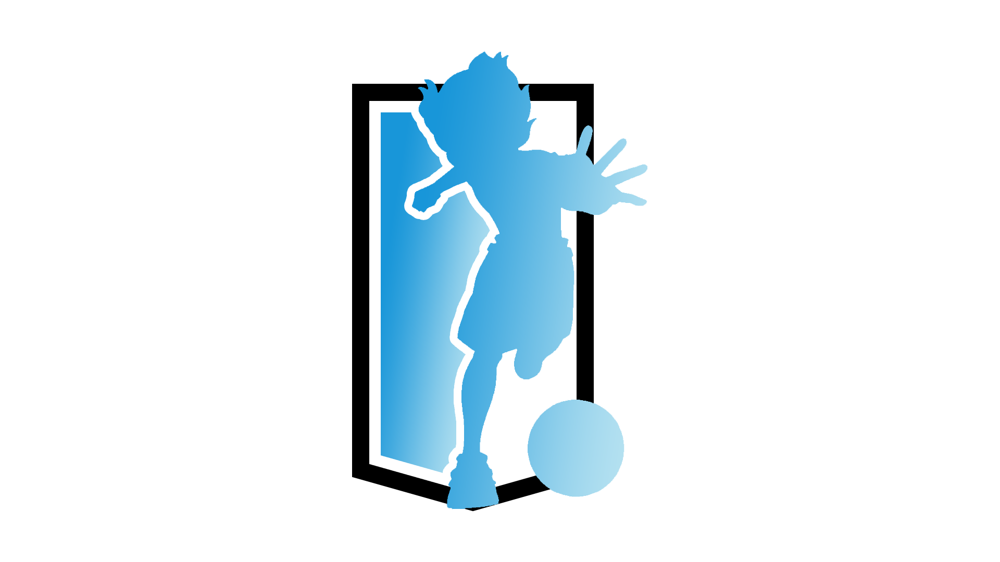
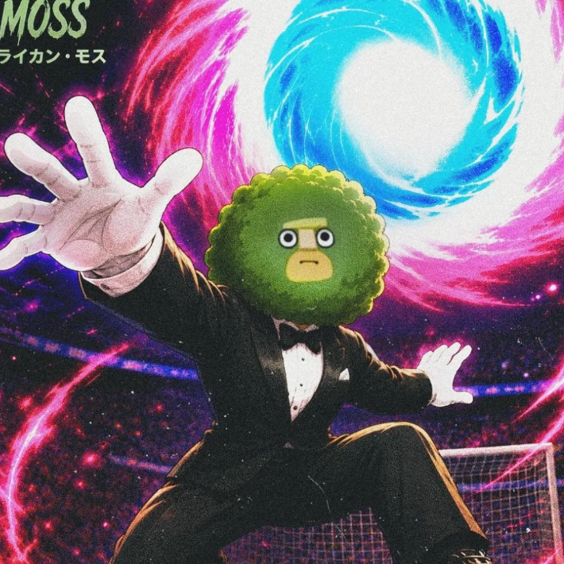
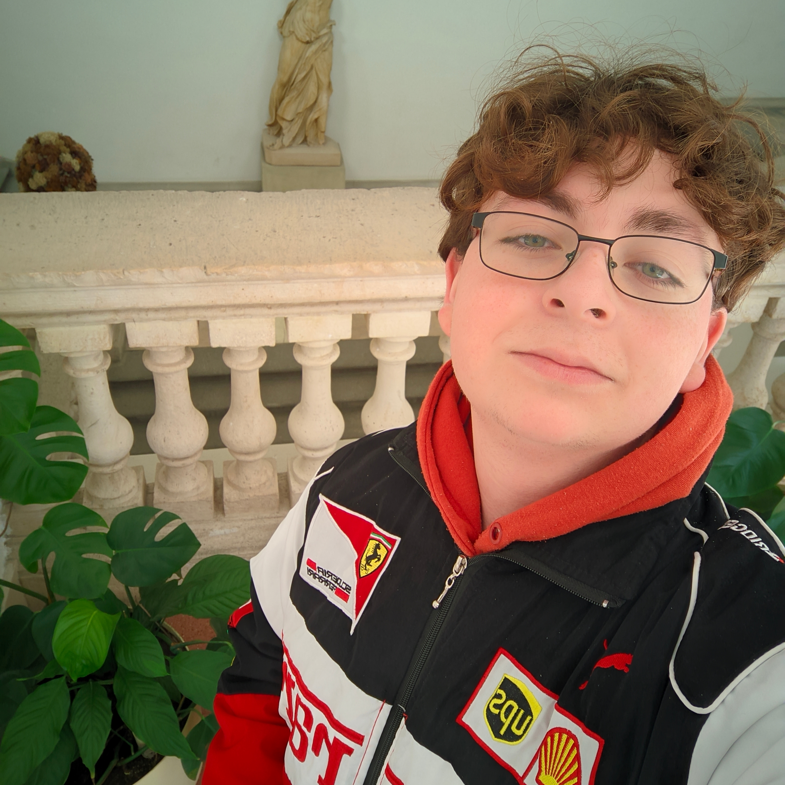
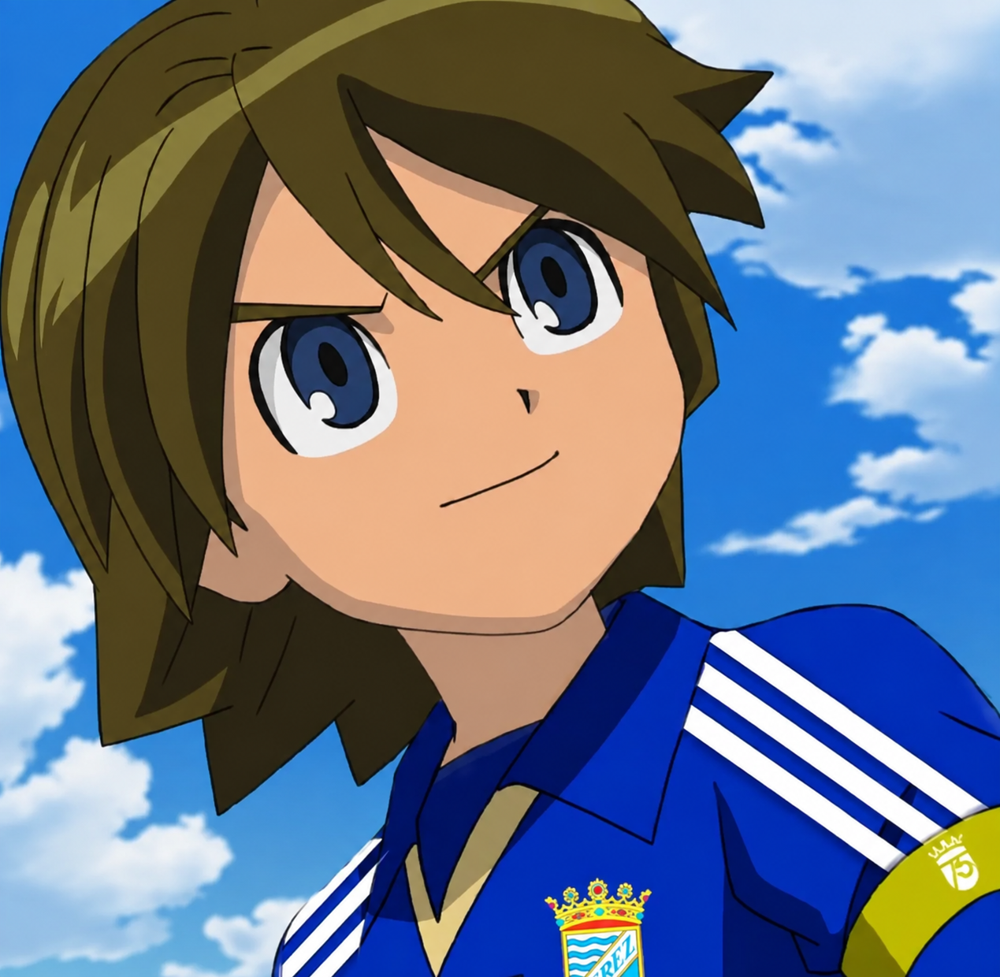
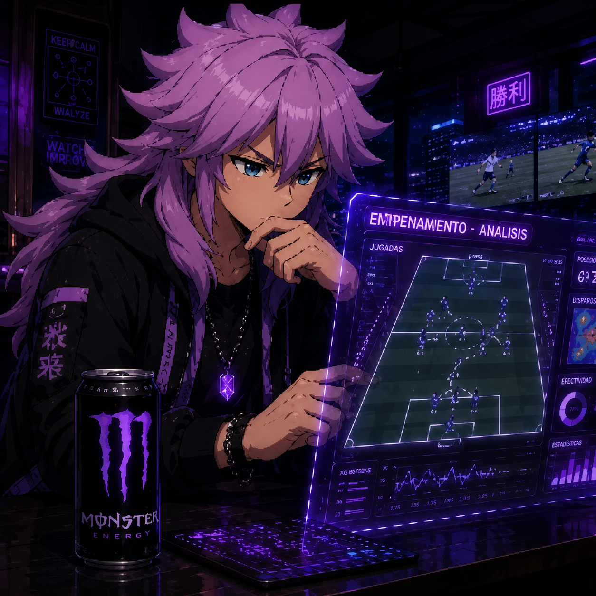

010
Solo giocatori verdi
Rarità minima e passive esattamente come sono uscite. Nessun reroll.
La lega competitiva di Inazuma Eleven: Victory Road, gestita dalla community. Giocatori verdi, tetto salariale e zero tattiche RNG: qui nessuno vince per fortuna nell’evocazione.
Nel competitivo del gioco vince chi ha evocato di più. Qui no: il caso esiste una sola volta, nell’evocazione iniziale, e da lì nessuno può toccare, cambiare o migliorare nulla.
Rarità minima e passive esattamente come sono uscite. Nessun reroll.
Il mercato ha un tetto per club. Nessuna rosa accumula tutto il talento.
Niente che decida una partita per fortuna. Decide l’allenatore, non il caso.
Promozione e retrocessione perché nessuno giochi fuori dal proprio livello.
Il regolamento completo (infortuni, rose da 20, finestre di mercato e sanzioni) vive sul Discord.
Vedi tutte le regoleOgni stagione ha aggiunto un pezzo che alla precedente mancava: prima il formato, poi le competizioni, ora la continuità. Questa è l’evoluzione reale, senza fronzoli.
La liga arrancó con la Superliga Frontier como única competición: sin Ascenso ni Copa todavía. Parte de los managers inscritos no pudo sostener el calendario hasta el final, así que la temporada se cerró sin adjudicar título en lugar de coronar a un campeón con la mitad de los partidos sin jugar. Fue una decisión deliberada: antes de tener campeón, la liga necesitaba tener reglas que aguantasen.
Con lo aprendido en la primera se rehízo la estructura: nacen el Cadetta Frontier como segunda división y la Coppa Calcio Frontier como torneo independiente. Hubo obstáculos por el camino (bajas, calendarios que recolocar), pero esta vez la temporada se jugó entera y se decidió en el campo: david.gonzzalezc levantó la Superliga con el Alpino, D4rkRepulser ganó el Ascenso y Totti Alcresise se llevó la Copa con el Inazuma Kids.
Es la primera temporada que arranca inmediatamente después de la anterior, sin parón ni refundación: las tres competiciones conviven ya con calendario propio. El staff que la dirige empezó jugando de forma casual y se sumó después a la administración, así que las decisiones se toman desde dentro de la comunidad y no por encima de ella.
Il fondatore, Franshu, ha giocato tutte e tre le stagioni da allenatore (Kirkwood, Ragnah e Criaturas de la Noche) prima di dedicarsi completamente all’organizzazione.
9.5/10Gracias a esta liga podemos seguir disfrutando el juego y crear una comunidad del juego de nuestras infancias además de todo el trabajo que hay detrás de ella.”
9.6/10Gracias a esta liga aprendí muchas cosas, entre ellas, a saber aceptar consejos. Personalmente, creo que la liga es lo que mantendrá viva a la comunidad del juego.”
9.2/10Llevo tres ligas distintas probadas y esta es la única donde perder no se siente como una excusa de mala suerte del rival.”
| Pos | Squadra | G | Pti |
|---|---|---|---|
| 1 · |  Zanark Domain Zanark Domain | 11 | 33 |
| 2 · |  Servicio Secreto Servicio Secreto | 11 | 30 |
| 3 · |  Inazuma Kids FC Inazuma Kids FC | 11 | 22 |
| 4 · |  Colegio Poderosa Fe Colegio Poderosa Fe | 11 | 21 |
| 5 ▲ |  Academia Plenilunio Academia Plenilunio | 11 | 19 |
| 6 ▲ |  Gar Gar | 11 | 16 |
| 7 ▼ |  Instituto Zeus Instituto Zeus | 11 | 14 |
| 8 · |  Criaturas de la Noche Criaturas de la Noche | 11 | 13 |
| 9 · |  Mary Times Mary Times | 11 | 12 |
| 10 · |  Alpino Alpino | 11 | 10 |
| 11 · |  Monte Olimpo Monte Olimpo | 11 | 3 |
Academia Plenilunio0Instituto Zeus3Colegio Poderosa Fe2Instituto Zeus3Zanark Domain2Instituto Zeus1Servicio Secreto2Inazuma Kids FC1Zanark Domain3Servicio Secreto1Zanark Domain1º3Servicio Secreto2º1
 Royal Academy0
Royal Academy0 Instituto Otaku3
Instituto Otaku3 Triple C3
Triple C3 Raimon0Royal Academy0Triple C3
Raimon0Royal Academy0Triple C3 Instituto Farm3Instituto Otaku0
Instituto Farm3Instituto Otaku0 Cala Pirata0
Cala Pirata0 Instituto Occult1
Instituto Occult1 Épsilon0
Épsilon0 Instituto Kirkwood3Zanark Domain4Instituto Zeus0Servicio Secreto3Academia Plenilunio0Colegio Poderosa Fe2Instituto Occult0Inazuma Kids FCMary TimesZanark Domain2Servicio Secreto0Colegio Poderosa FeZanark DomainZanark Domain9Academia Plenilunio6Alpino3Instituto Kirkwood0Servicio Secreto9Instituto Zeus4Instituto Farm4
Instituto Kirkwood3Zanark Domain4Instituto Zeus0Servicio Secreto3Academia Plenilunio0Colegio Poderosa Fe2Instituto Occult0Inazuma Kids FCMary TimesZanark Domain2Servicio Secreto0Colegio Poderosa FeZanark DomainZanark Domain9Academia Plenilunio6Alpino3Instituto Kirkwood0Servicio Secreto9Instituto Zeus4Instituto Farm4 Big Bang0Colegio Poderosa Fe7Mary Times6Triple C4Gar0Inazuma Kids FC9Instituto Occult6Criaturas de la Noche3Monte Olimpo0
Big Bang0Colegio Poderosa Fe7Mary Times6Triple C4Gar0Inazuma Kids FC9Instituto Occult6Criaturas de la Noche3Monte Olimpo0 Raleigh GreenstreetATTZanark Domain
Raleigh GreenstreetATTZanark Domain Jade BeorATTServicio Secreto
Jade BeorATTServicio Secreto Mystral CallousATTInstituto Zeus
Mystral CallousATTInstituto Zeus Barbara BittATTInazuma Kids FC
Barbara BittATTInazuma Kids FC GentianATTZanark Domain
GentianATTZanark Domain Stan RollerATTServicio Secreto
Stan RollerATTServicio Secreto Vier WhitelyATTInazuma Kids FC
Vier WhitelyATTInazuma Kids FC Adora ShiversCENColegio Poderosa Fe
Adora ShiversCENColegio Poderosa Fe Infinity BeyondATTColegio Poderosa Fe
Infinity BeyondATTColegio Poderosa Fe Scaris CowlerATTZanark Domain
Scaris CowlerATTZanark Domain Njord SnioATTInstituto Zeus
Njord SnioATTInstituto Zeus Seth BaelATTServicio Secreto
Seth BaelATTServicio Secreto Zanark AvalonicATTZanark Domain
Zanark AvalonicATTZanark Domain BetaATTCriaturas de la Noche
BetaATTCriaturas de la Noche DekihCENServicio Secreto
DekihCENServicio Secreto LuciaATTInazuma Kids FC
LuciaATTInazuma Kids FC Sol DaystarATTGar
Sol DaystarATTGar Thaddeus BellefaxCENColegio Poderosa Fe
Thaddeus BellefaxCENColegio Poderosa Fe Zack AvalonATTZanark Domain
Zack AvalonATTZanark Domain Angelo GabriniCENInazuma Kids FC
Angelo GabriniCENInazuma Kids FC Brom HexineATTCriaturas de la Noche
Brom HexineATTCriaturas de la Noche Desmodus DrakulATTGar
Desmodus DrakulATTGar Grant StodgellATTColegio Poderosa Fe
Grant StodgellATTColegio Poderosa Fe Joan AsensiATTAlpino
Joan AsensiATTAlpino Keines ElvainATTMary TimesLuciaATTInazuma Kids FC
Keines ElvainATTMary TimesLuciaATTInazuma Kids FC Nora FlexionATTAcademia Plenilunio
Nora FlexionATTAcademia Plenilunio Romica GlimmerlyATTGar
Romica GlimmerlyATTGar Shawn FrosteATTAlpino
Shawn FrosteATTAlpino Terri Ann ThropeATTInstituto Zeus
Terri Ann ThropeATTInstituto Zeus Tom SkipperATTInstituto Zeus
Tom SkipperATTInstituto Zeus Van YamanoATTCriaturas de la Noche
Van YamanoATTCriaturas de la Noche
Tras varios meses reflexionando, Manu consiguió desterrar todo lo negativo de su pasado y ahora quiere, con un equipo desde cero, demostrar de qué es verdaderamente capaz. Si quieren saber qué ocurrirá, Manu les dará las novedades.
Due nomi senza i quali la lega non sarebbe la stessa. Uno per un record, l’altro per una frase che nessuno dimentica.

RecordSecondo Steam Ladder, il giocatore con più ore registrate a Inazuma Eleven: Victory Road in Europa e in Spagna, e il secondo al mondo.
«Al Gonzalo ese le gano fácil»
Rivolta a david.gonzzalezc, presidente dell’Alpino, prima di uno scontro diretto. La frase è rimasta ed è ormai folclore della lega.
Sei persone che hanno iniziato giocando e sono finite a organizzare. Tutte competono ancora con il proprio club: nessuno dirige la lega dall’esterno.

Creó la liga en enero de 2026 y la ha sostenido tres temporadas. Ha jugado las tres como manager (Kirkwood, Ragnah y Criaturas de la Noche) antes de dedicarse por completo a organizarla.
Criaturas de la Noche
Zanark Domain

Alpino
Academia Plenilunio
Inazuma Kids FC

Gar
Entra nel Discord della community e presentati nel canale delle iscrizioni. Da lì lo staff ti spiega com’è messa la stagione in corso e se c’è un posto libero da allenatore o se entri in lista per la prossima.
No. È un progetto amatoriale senza scopo di lucro: nessuna quota d’iscrizione, nessun abbonamento e la lega non genera alcun profitto.
No. Ci sono due divisioni proprio perché ogni allenatore giochi contro persone del suo livello. Se inizi, normalmente parti dall’Ascenso Frontier.
Dipende se resta qualche club senza allenatore. Se non c’è, entri in lista d’attesa per la stagione successiva o per il mercato.
Sì. Ci sono allenatori di diversi paesi e il sito è disponibile in più lingue. L’unica cosa da concordare è l’orario delle partite con il tuo avversario.
Inazuma Eleven: Victory Road e un account Discord. Nient’altro.
Franshu, nel gennaio 2026. Ha giocato tutte e tre le stagioni da allenatore prima di dedicarsi completamente all’organizzazione della lega; puoi vedere la sua scheda nella sezione Staff.
Un giocatore esattamente com’è uscito dall’evocazione iniziale, senza passive modificate dopo. La fortuna nell’evocazione esiste: ciò che è vietato è toccare, cambiare o migliorare una passiva già evocata.
Perché trasforma la competizione in una gara di ore spese a ripetere evocazioni invece che di decisioni da allenatore. Con i giocatori verdi, tutti partono dalla stessa regola.
No. Sono vietate le tattiche che dipendono dalla fortuna invece che dalla decisione dell’allenatore durante la partita.
Quattro supertecniche canoniche per giocatore, esattamente come esistono nel gioco.
Solo fagioli, senza ulteriori limitazioni.
Lo staff esamina il caso con le prove della partita. A seconda della gravità può comportare la ripetizione, la sconfitta a tavolino o una sanzione di mercato.
Ogni partita viene comunicata allo staff con risultato e marcatori, e da lì nascono la classifica, la classifica marcatori e le schede giocatore di questo sito.
Un limite di 250M per squadra sul mercato. Distribuisce il livello tra i club ed evita che uno solo accumuli tutto il talento di alto livello.
Tra una stagione e l’altra, in una finestra precisa annunciata dallo staff su Discord. Fuori da quella finestra le rose sono chiuse.
Sì, trattando con il suo allenatore e purché l’operazione rientri nel tetto salariale di entrambe le squadre.
Giocatori senza club in quel momento. Possono entrare in una rosa durante il mercato, sempre rispettando il tetto salariale.
Undici titolari più le riserve. Nella scheda di ogni squadra puoi vedere la rosa completa ordinata per ruolo e numero.
L’undici titolare lo decide l’allenatore partita per partita. I numeri restano fissi nella stagione perché schede e statistiche siano coerenti.
Due: la Superliga Frontier (prima divisione) e l’Ascenso Frontier (seconda divisione), con promozioni e retrocessioni ogni stagione.
La stagione regolare fissa le posizioni. Le prime 6 giocano la fase finale: 5ª contro 6ª, la vincente affronta la 4ª nel Play In (in casa della meglio piazzata), e chi vince entra ai Play Off con 1ª, 2ª e 3ª.
Le prime tre dell’Ascenso Frontier salgono in Superliga e le ultime tre della Superliga scendono in Ascenso.
Turno preliminare (7ª-10ª e 8ª-9ª dell’Ascenso) → Turno 2 (le 6 restanti dell’Ascenso + le 2 qualificate) → Fase a gironi (12 dalla Superliga + 4 dall’Ascenso, 4 gironi da 4, passano le prime 2) → Quarti, semifinali e finale.
Per punti; poi differenza reti, gol fatti, gol subiti, vittorie, pareggi, sconfitte, partite giocate e infine ordine alfabetico.
Per gol segnati. Quando più giocatori sono a pari, si ordinano alfabeticamente tra loro: chi ha segnato prima in calendario non è un criterio sportivo.
Si decide ai rigori, e il risultato dei tiri resta indicato nel dettaglio della partita.
Tre giornate a settimana, con orari flessibili per adattarsi alla disponibilità degli allenatori.
Si riprogramma nella stessa giornata quando possibile. Se comunque non si gioca, lo staff decide secondo il regolamento sulle mancate presentazioni.
La Superliga Frontier decide su campeón en dos fases. La liga regular fija las posiciones de los 20 equipos. Los 6 primeros disputan la fase final: 5º contra 6º, el ganador juega el Play In contra el 4º (local por mejor clasificación), y ese ganador entra al Play Off junto al 1º, 2º y 3º — de ahí sale el campeón. Al mismo tiempo, el resultado de la liga regular decide el ascenso y el descenso entre divisiones: los tres primeros del Ascenso Frontier suben a la Superliga, y los tres últimos de la Superliga bajan al Ascenso. Ambos mecanismos comparten la misma tabla de clasificación, por lo que jugar por el título y jugar por no descender son, durante buena parte de la temporada, la misma pelea.
Dopo ogni giornata. Classifica, risultati, marcatori e schede provengono tutti dallo stesso file di dati ufficiale della lega.
Indicano le zone Play Off, Play In, spareggio Play In e retrocessione in Superliga, e la zona promozione in Ascenso Frontier. La legenda è subito sotto la tabella.
L’affinità di ogni giocatore nel gioco: Fuoco, Montagna, Foresta, Aria e Neutro. Compaiono nella scheda, nella classifica marcatori e nel dettaglio di ogni partita.
Sì. Nella scheda giocatore e nel dettaglio partita c’è un pulsante per scaricare una card in immagine, pronta da pubblicare.
In spagnolo, inglese, portoghese, italiano, francese, giapponese, coreano, polacco, bulgaro e serbo, dal selettore di lingua in alto.
No. Le illustrazioni di giocatori e squadre appartengono a Level-5, creatori di Inazuma Eleven. Superliga Frontier è un progetto amatoriale senza scopo di lucro.
Campioni calcolati sulla classifica finale archiviata di quella stagione e sul risultato della finale di Coppa. Tocca un club per aprirne la scheda.